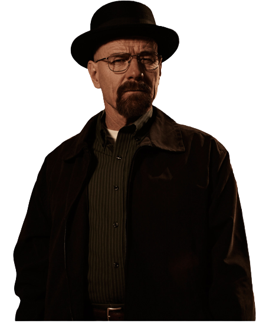
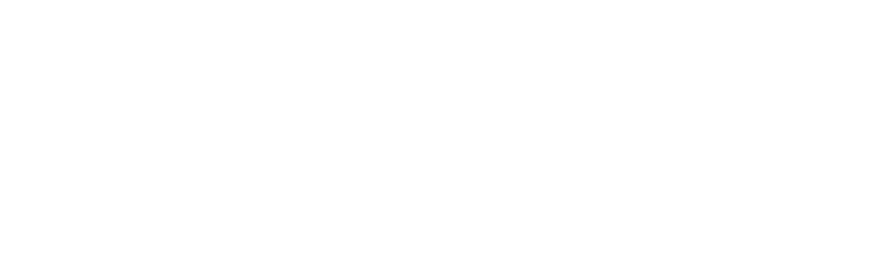
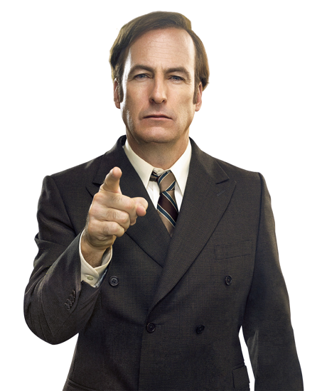
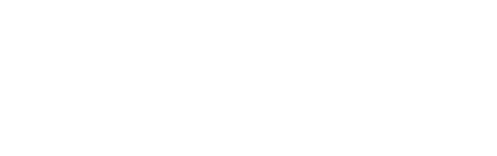

Walter White
- Se estrenó el 20 de enero de 2008
- Breaking Bad es una serie de televisión dramática estadounidense creada y producida por Vince Gilligan. Narra la historia de Walter White, un profesor de química con problemas económicos a quien le diagnosticaron un cáncer de pulmón inoperable. Para pagar su tratamiento y asegurar el futuro económico de su familia, comienza a cocinar y vender metanfetamina, junto con Jesse Pinkman, un antiguo alumno suyo.
- Es considerada como una de las mejores series televisivas de todos los tiempos. En 2013, Breaking Bad fue uno de los programas de televisión por cable más vistos en los Estados Unidos.
BREAKING BAD



Saul Goodman
- Se estrenó el 20 de enero de 2008
- Breaking Bad es una serie de televisión dramática estadounidense creada y producida por Vince Gilligan. Narra la historia de Walter White, un profesor de química con problemas económicos a quien le diagnosticaron un cáncer de pulmón inoperable. Para pagar su tratamiento y asegurar el futuro económico de su familia, comienza a cocinar y vender metanfetamina, junto con Jesse Pinkman, un antiguo alumno suyo.
- Es considerada como una de las mejores series televisivas de todos los tiempos. En 2013, Breaking Bad fue uno de los programas de televisión por cable más vistos en los Estados Unidos.
BETTER CALL SAUL



Kendall Roy
- Se estrenó el 20 de enero de 2008
- Breaking Bad es una serie de televisión dramática estadounidense creada y producida por Vince Gilligan. Narra la historia de Walter White, un profesor de química con problemas económicos a quien le diagnosticaron un cáncer de pulmón inoperable. Para pagar su tratamiento y asegurar el futuro económico de su familia, comienza a cocinar y vender metanfetamina, junto con Jesse Pinkman, un antiguo alumno suyo.
- Es considerada como una de las mejores series televisivas de todos los tiempos. En 2013, Breaking Bad fue uno de los programas de televisión por cable más vistos en los Estados Unidos.